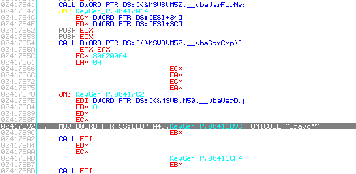
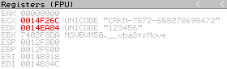
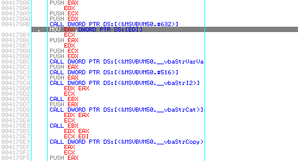
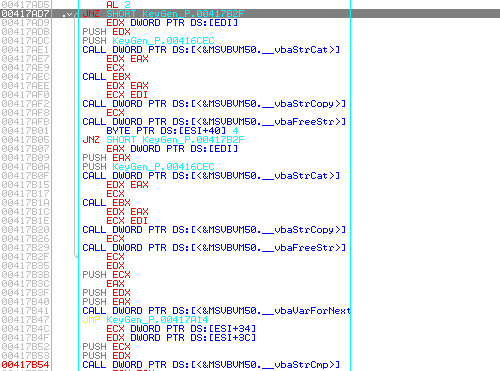

|
Comme d'habitude, on commence par une analyse rapide avec PeId pour vérifier que le programme n'est pas compressé ou crypté.
Il ne l'est pas. Par contre on voit qu'il a été compilé avec Visual Basic 6.0.
Pour étudier les programmes VB, l'outil idéal est Smartcheck. Mais pour varier les plaisirs et éviter de faire 2 fois un même tutorial, on va utiliser OllyDbg cette fois.
|
|
On lance OllyDbg et on charge le programme avec F3. La première chose à faire est de trouver un endroit intéressant dans le programme. Par exemple, là où sont comparés les serials. On va d'abord regarder les chaînes de caractères présentes en espérant trouver une phrase du style "Mauvais serial". On fait un click-droit dans la fenêtre principale, puis "Search for" et "All referenced text strings".
On voit "Bravo!", "Mauvais serial" et une chaîne qui ressemble étrangement à un morceau de serial: "CRKM-". On va voir où nous mène la chaîne "Bravo!", donc on double-click dessus.

Plusieurs choses intéressantes:
- Au-dessus de "Bravo!", en 0x00417B78, on voit un saut conditionnel (JNZ) qui nous envoit vers l'affichage de la MsgBox "Mauvais serial".
- Un peu au-dessus, en 0x00417B54, on voit un appel de la fonction _vbaStrCmp qui teste l'égalité entre 2 chaînes de caractères. Suivi d'un TEST EAX, EAX qui va déterminer le passage du saut conditionnel.
Juste avant cette fonction, on voit que ECX et EBX lui sont passés en paramètre. On va mettre un point d'arrêt (F2) sur cette fonction pour voir ce qu'elle teste, puis lancer le programme (F9). On tape un nom et un serial, par exemple: "kharneth" et "123456". On valide et OllyDbg arrête l'exécution du programme.

On regarde la fenêtre des registres et on voit clairement que la fonction compare notre serial bidon (dont l'adresse est contenue dans EDX) avec le bon serial (dont l'adresse est contenue dans ECX). Reste à retrouver comment le serial a été généré.
La première chose frappante est le "CRKM-" que l'on avait vu dans la liste des chaînes. On retourne dans la fenêtre de référence des chaînes pour double-clicker sur "CRKM-" et voir où il nous emmène. On pose un point d'arrêt dessus et on relance le programme. On valide et on retourne sous OllyDbg.
On trace avec F8 pour voir ce qu'il se passe. On arrive en 0x004177AE où la fonction _vbaLenBstr prend notre nom et renvoie le nombre de caractères qu'il contient, soit 8 qui est stocké dans EAX. On remarque que notre nom a été converti en majuscule. Continuons à tracer.
On arrive sur une partie intéressante qui contient plusieurs fonctions de manipulation de chaînes.
rtcMidCharVar, _vbaStrVarVal, rtcAnsiValueBstr, _vbaStrI2, _vbaStrCat. Voyons ce que tout ça fait en traçant doucement. Et en surveillant les registres.

- D'abord, _vbaStrVarVal renvoie le premier caractère de notre nom ('K').
- Puis, rtcAnsiValueBstr renvoie la valeur hexa de ce caractère (0x4B).
- _vbaStrI2 prend cette valeur au format décimal et la transforme en chaîne ("75").
- Finalement cette chaîne est copiée à la suite du résultat précédent avec _vbaStrCat.
En continuant à tracer, on arrive en 0x00417944 sur un saut (JMP) qui nous renvoit au début de la boucle pour traiter le caractère suivant. La 4ème instruction (après le début de la boucle) est un saut conditionnel (JE) qui sort de la boucle lorsque tous les caractères ont été traités. On click dessus puis on presse Entrer pour arriver sur l'instruction suivante une fois que la boucle est terminée.
On se trouve donc en 0x00417949 où on place un point d'arrêt. On relance le programme avec F9 pour que la boucle s'exécute complètement.
Maintenant que tous les caractères sont traités, on va tracer en surveillant les registres pour voir ce que le programme fait de la chaîne de caractères. On arrive en 0x004179BD sur un appel de la foncion _vbaLenBstr qui prend comme paramètre notre chaîne ("7572658278698472") et renvoie sa taille (10). En continuant de tracer, on arrive en 0x00417A14 sur une nouvelle boucle qui prend les caractères de la chaîne 2 par 2 et les copie à la suite de "CRKM-" en 0x00417A9B.
Ensuite, si les 2 premiers groupes de 2 caractères sont traités, le programme insère un '-' à la suite puis continue de copier les caractères restants.

Une fois que la boucle est terminée, on arrive sur la fonction _vbaStrCmp, vue précédemment, qui compare notre serial bidon avec le serial calculé.
Récapitulons l'algorithme:
- Le nom est convertie en majuscule.
- Le code ASCII de chaque caractère est récupéré au format décimal puis convertie en chaîne.
- Le tout est copié à la suite de "CRKM-" en insérant un '-' aprés les 4 premiers caractères.
On peut maintenant coder le KeyGen! :o)
|
|
Voici le code source d'un KeyGen écrit sous Dev-C++.
#include <stdio.h>
#include <stdlib.h>
#include <string.h>
// Fonction de conversion de caractères minuscules en majuscules.
char UpCase(char minus) {
if (minus>='a' && minus<='z') {
return minus-'a'+'A';
}
else {
return minus;
}
}
int main(int argc, char *argv[])
{
char nom[128] = "";
char serial[256] = "CRKM-";
char maj[128] = "";
char buffer[20] = "";
int i = 0;
int t = 0;
printf("Entrez votre nom: ");
scanf("%s", nom);
for (i=0;i<strlen(nom);i++) { // Pour chaque caractère
maj[i] = UpCase(nom[i]); // le converti en maj
itoa(maj[i], buffer, 10); // converti son code ASCII
// décimal en chaîne
strcat(serial, buffer); // copie le tout à la suite
// de "CRKM-"
if (i==1) { // Si les 2 1ers car sont traités
serial[strlen(serial)] = '-'; // insérer un '-'
}
}
printf("Serial: %s\n", serial);
system("pause");
return 0;
}
Voici le code source d'un KeyGen écrit sous Delphi.
procedure TForm1.Button1Click(Sender: TObject);
var nom, maj, serial: String;
i: Integer;
begin
serial := 'CRKM-';
nom := edit1.Text;
maj := UpperCase(nom);
for i:=1 to length(nom) do
begin
serial := serial + IntToStr(Ord(maj[i]));
if i=2 then
serial := serial + '-';
end;
edit2.Text := serial;
end;
|